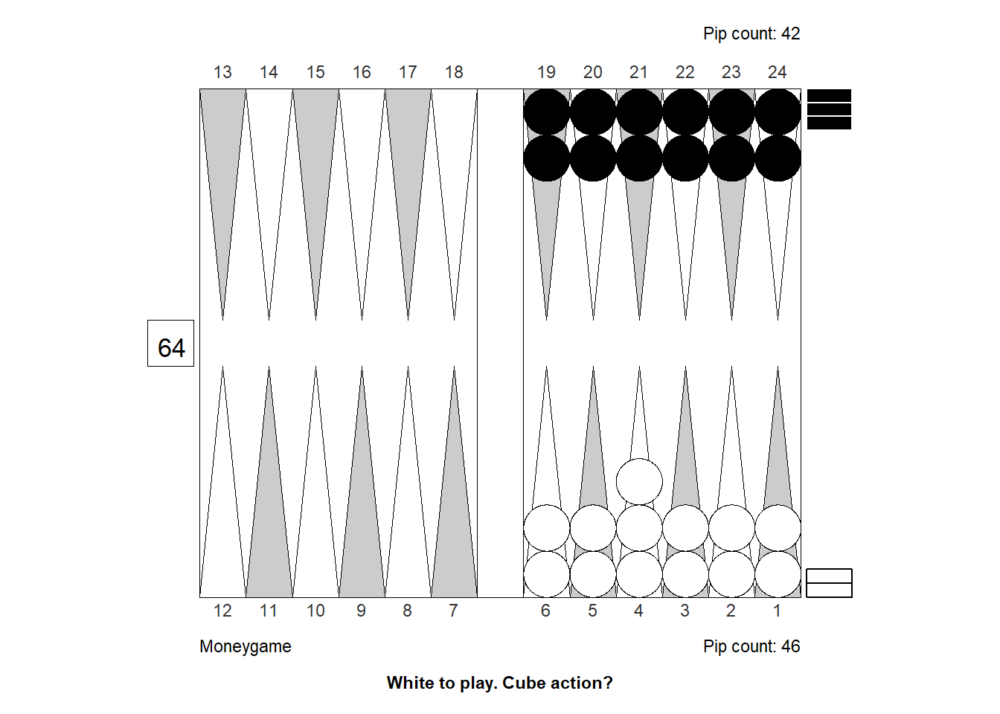
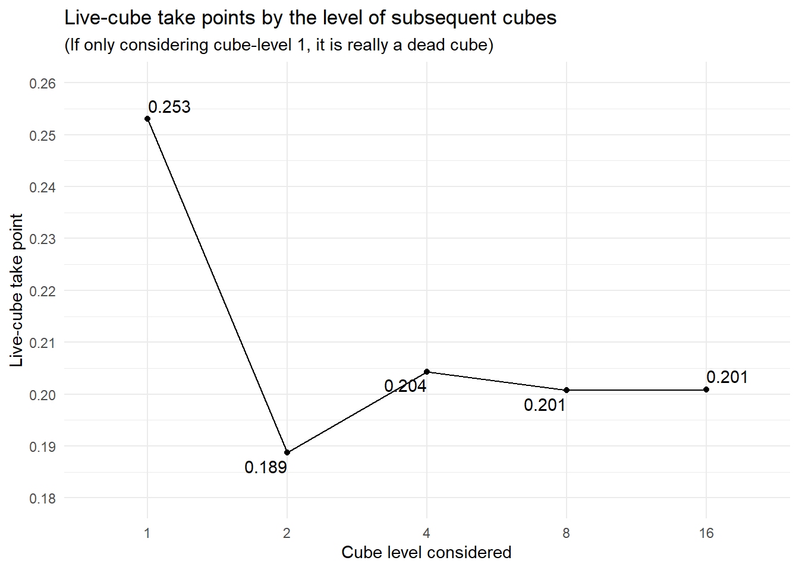

Janowski Formulars
Why this?
This note is for better understanding exactly what eXtreme Gammon does to estimate cubeless and cubeful equities at money and match play. In particular, we apply the Janowski Formular(s) and try to figure out what it means when the eXtreme Gammon Documentation says that “In eXtreme Gammon the Janowski formula has been extended to apply also in match play”.
How XG works
They basic mechanism is this:
A neural net evaluates a position and come up with six probabilities for either winning or losing a regular game, a gammon and a backgammon. The estimated probabilities are for cubeless money game: What will happen if the game is played to conclusion with no doubling cube at money game conditions.
To improve the quality of this estimate, a weighted average of all possible positions after one and after two rolls is calculated; what we call 2- and 3-ply evaluations. The initial neural net evaluation is 1-ply.
From the estimated probability distribution, it is easy to calculate an expected, or average outcome, the equity of the position. This is still assuming money game with no doubling cube. Since that situation never happens, the number is not terribly relevant. Therefore, XG tries to estimate what the cubeful equity is, using formulas develped by Rick Janowski.
Janowski formulas
We won’t explain in detail how Rick Janowski’s formulars work (that is in the article linked above), we’ll just show an example.
As mentioned , a game of backgammon played to conclusion can end in six possible ways. A certain position in Janowski’s article, have the following probabilities of each outcome:
| Regular | Gammon | Backgammon | Sum | |
|---|---|---|---|---|
| Player wins | 0.47 | 0.17 | 0.01 | 0.65 |
| Opponent wins | 0.31 | 0.04 | 0.00 | 0.35 |
| Sum | 0.78 | 0.21 | 0.01 | 1.00 |
Suppose the relative gammon and backgammon frequencies stay constant as the chance to win changes. Then, the average win will be:
\[W=\frac{47 \times 1 + 17 \times 2 + 1 \times 3}{47 + 17 + 1} = 1.292\ points\] The average loss will be:
\[L=\frac{31 \times 1 + 4 \times 2 + 0 \times 3}{31 + 4 + 0} = 1.114\ points\]
The take point, taking recubes into account is:
\[TP= \frac{L-0.5}{W+L+0.5x}\]
where \(x\) is what Janowski calls the cube-life index, a number between 0 (where the cube is dead) and 1, where all doubles are efficient, i.e. right at the borderline between take and pass.
The equity, as a function of game winning chances, \(p\) and cube location (player, center, opponent) is:
\[E_{player}= p(W+L+0.5x)-L\] \[E_{center}= p(W+L+0.5x)-L-0.5x\] \[E_{opponent}= \frac{4}{4-x}(p(W+L+0.5x)-L-0.25x)\]
From these, we can estimate cube actions and the size of any cube errors.
A couple of observations:
It shouldn’t be too difficult to extend this to match play, since \(W\) and \(L\) can be calculated with match equities, rather than 1, 2, 3 for regular, gammon and backgammon.
It is a simplification to assume that gammon frequencies remain and cube-life remain constant through a game; near conclusion games are more likely to be races without gammons and fewer opportunities to double efficiently.
Let’s do this with a few practical examples and check if the formulas agree with what XG says.
Money game examples
Opening game
Let’s look at a position after Black opens with 21, slotting:

According to XG 1-ply, the probabilities of the six possible outcomes of the game, if played to conclusion, are as follows:
| Regular | Gammon | Backgammon | Sum | |
|---|---|---|---|---|
| Player wins | 0.3571 | 0.1316 | 0.0102 | 0.4989 |
| Opponent wins | 0.3654 | 0.1285 | 0.0072 | 0.5011 |
| Sum | 0.7225 | 0.2601 | 0.0174 | 1.0000 |
This comes to a cubeless equity of: \(E = 0.0069\); White is a slight underdog to win, but is compensated by a tiny bit of extra gammons and backgammons, so that the game is basically even.
Note that the numbers that XG reports are probabilities for winning (including gammons and backgammons), gammon (including backgammon), and backgammon. So they have to be converted to get probabilities that sum to 1. (My R-package, backgammon has a function for that.)
If we apply Janowski’s formulars to the above cubeless probablities, we get:
- Assuming a dead cube, \(x=0\), White’s take point is: 0.3032
- Assuming a perfectly live cube, \(x=1\), White’s take point is: 0.2541
- Assuming a dead cube, \(x=0\), Blacks’s take point is: 0.3107
- Assuming a perfectly live cube, \(x=1\), Black’s take point is: 0.2604
All these numbers align perfectly with what you get when you consult XGs Analyze|Cube Information menu.
Regarding the cubeful equities for the actual position, we have:
- White’s equity owning the cube: 0.183
- White’s equity with a centered cube: 0.008
- White’s equity after double/take: -0.34
Which also agrees with what XG says, if we assume a cube-life index of \(0.706\). Does XG change the cube-life index depending on the position?
Lets do another example to try to find out.
Bear-off position

| Regular | Gammon | Backgammon | Sum | |
|---|---|---|---|---|
| Player wins | 0.49694 | 0 | 0 | 0.49694 |
| Opponent wins | 0.50306 | 0 | 0 | 0.50306 |
| Sum | 1.00000 | 0 | 0 | 1.00000 |
With no gammons, the cubeless take point clearly is \(0.25\) and the perfectly efficient cubeful take point is \(0.20\) which is also what XG reports.
The cubeless equity is also easy to calculate: \(E=-0.00612\)
The Janowski-style estimated cubeful equities, assuming a cube-life index of \(0.622\), are:
- White’s equity owning the cube: 0.1484
- White’s equity with a centered cube: -0.0084
- White’s equity after double/take: -0.3251
XG reports \(0.1484, -0.0087, -0.3252\) respectively, very close to the calculated values, so it must assume a lower cube value in the second postion, which would also be reasonable in a medium to short length race like this.
Let’s do a final example.
Middle game

| Regular | Gammon | Backgammon | Sum | |
|---|---|---|---|---|
| Player wins | 0.4156 | 0.2333 | 0.0305 | 0.6794 |
| Opponent wins | 0.2610 | 0.0568 | 0.0028 | 0.3206 |
| Sum | 0.6766 | 0.2901 | 0.0333 | 1.0000 |
The cubeless equity is: \(E=0.5907\)
The Janowski-style estimated cubeful equities, assuming a cube-life index of \(0.706\), are:
- White’s equity owning the cube: 0.8305
- White’s equity with a centered cube: 0.7942
- White’s equity after double/take: 0.9551
XG reports \(0.8304, 0.8140, 0.9557\), again close to the calculated values, although not exactly the same. The reason for the discrepancy (especially with the cube in the middle) is not obvious. (I used 1-ply to make sure the difference is not due to how the numbers gets aggregated at higher plies.)